바이브코딩으로 만드는 역사수업 웹앱
진행: 동쌤(김동은 선생님). 말로 설명하면 AI가 웹앱을 만들어 줘요. 오늘은 웹앱을 하나 직접 만들어서 인터넷에 올리는 데까지 해 봐요.1쪽 · 어떤 역사 웹앱을 만들까요?
2쪽 · 동쌤 작품 둘러보기
동쌤이 바이브코딩으로 만들어 수업에 쓰고 있는 웹앱 16편이에요. 누르면 새 탭에서 바로 열려요.
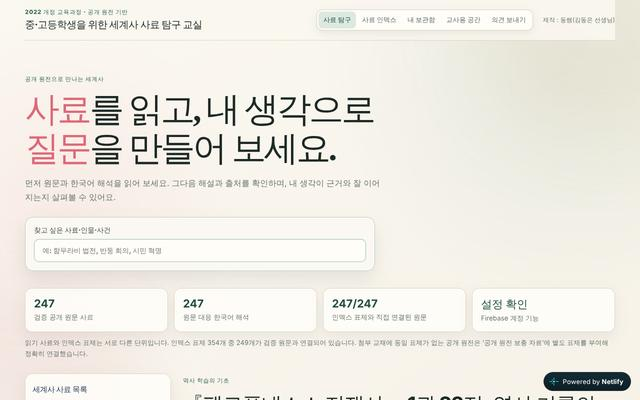
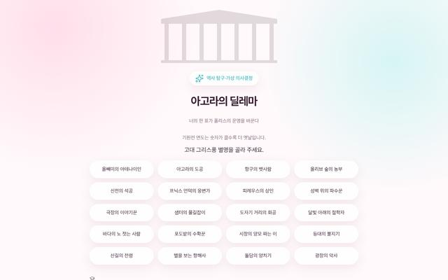
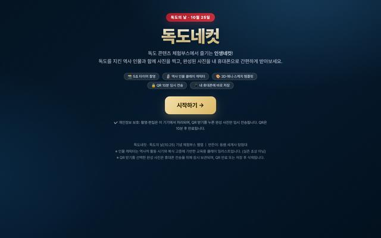
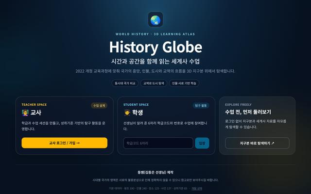
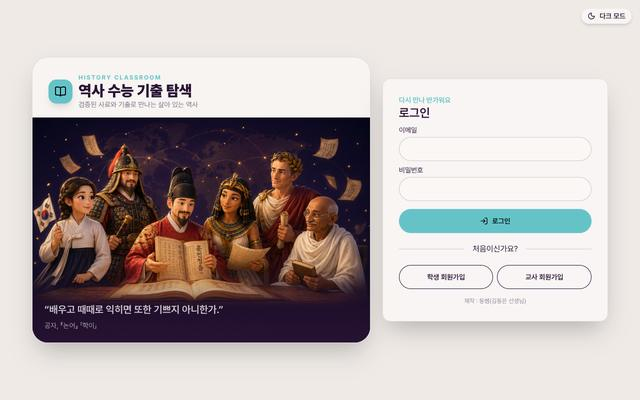
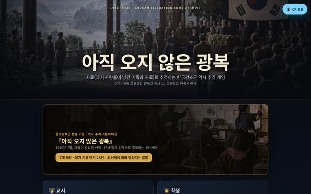
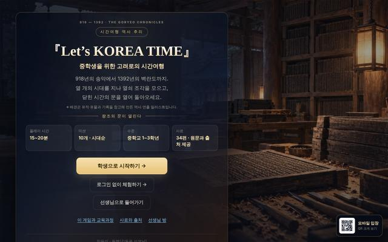
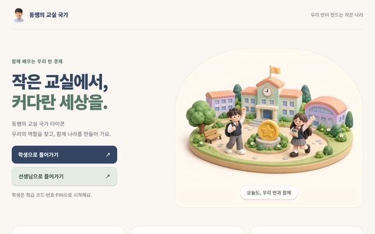
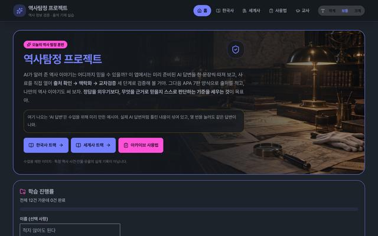
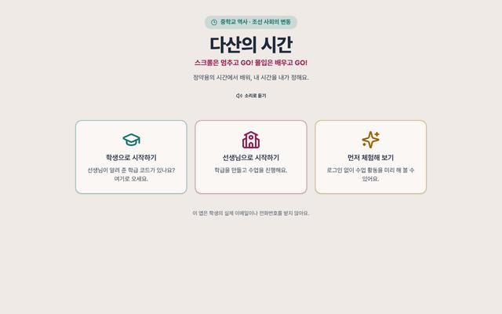
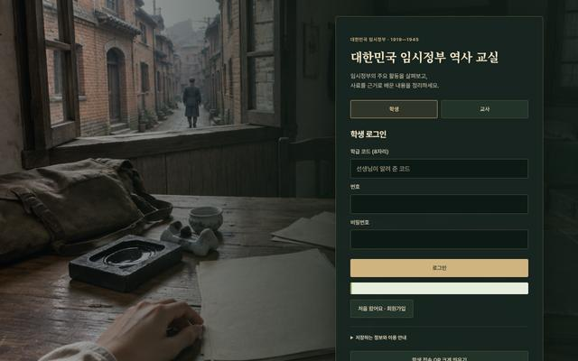
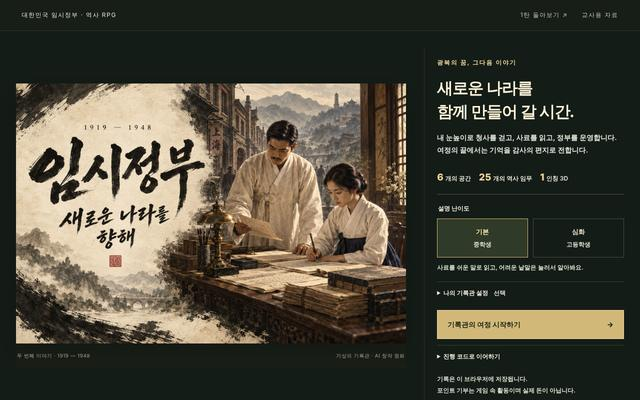
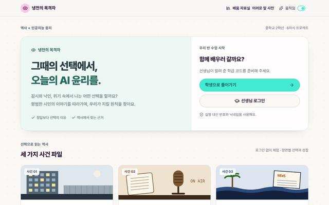
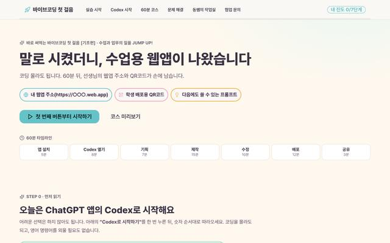
더 많은 기록과 소식은 동쌤 홈페이지에서 볼 수 있어요.
3쪽 · 학생이 되어 해 보기
이제 학생이 되어 볼게요. 먼저 임시정부 체험판(약 12분)을 해 보고, 시간이 남으면 나머지 두 개도 열어 보세요. 3D 게임이라 노트북이나 태블릿이 편해요.
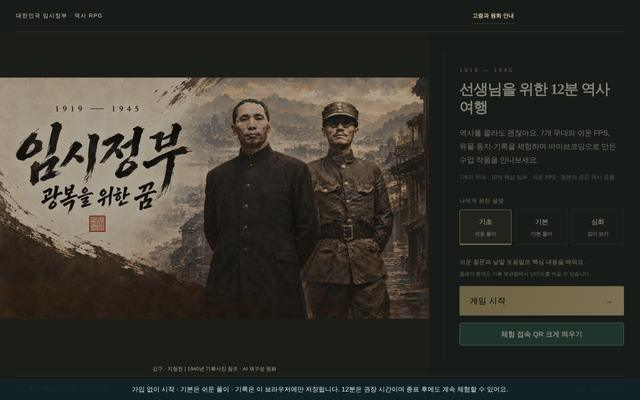
임시정부 : 광복을 위한 꿈 체험판
대한민국 임시정부가 한 일을 직접 걸어 다니며 알아보는 3D 역사 RPG예요. 선생님들이 12분 안에 해 볼 수 있게 줄였어요.
임시정부 체험판 시작 ↗해 보면서 ‘내 수업에서는 어디에 쓸까?’를 생각해 두세요. 4쪽에서 이야기 나눠요.
4쪽 · 해 보니 어땠나요?
5쪽 · 만들 때 조심할 점
6쪽 · 역사 교사 미니 해커톤
고르고 쓰는 대로 아래 프롬프트가 바로 바뀌어요. 이 쪽에서는 AI를 쓰지 않으니 인터넷이 없어도 돼요.
7–9쪽 · 인터넷에 올리고 함께 보기
배포는 내가 만든 웹앱에 인터넷 주소를 붙이는 일이에요. 두 방법 중 하나를 골라 차례대로 따라 해 보세요. 끝낸 단계는 눌러서 표시해 두면 돼요. 노트북으로 하면 편해요.
동쌤의 웹앱들도 이 방법으로 올렸어요. 주소가 내가 정한 이름.web.app으로 깔끔하고, 나중에 학생 답을 실시간으로 모으는 데이터베이스(Firestore)도 같은 곳에 붙일 수 있어요. 구글 계정만 있으면 무료예요.
처음 한 번만: 컴퓨터 준비하기- 맥에서 권한 오류가 나면 맨 앞에
npm install -g firebase-toolssudo를 붙이고, 컴퓨터 암호를 넣어요. firebase login
- 맥은 폴더를 Dock의 터미널 아이콘 위로 끌어다 놓으면 돼요.
firebase init hosting- Please select an optionUse an existing project를 고르고 방금 만든 프로젝트 선택
- public directory?그냥 Enter
- single-page app?N
- GitHub automatic builds?N
- 나중에 고칠 때는 public 폴더의 index.html만 바꾸고
firebase deployfirebase deploy를 다시 하면 같은 주소에 바로 반영돼요.
이 폴더의 index.html을 Firebase Hosting에 배포해 줘. 나는 처음이야. 필요한 설치와 로그인을 하나씩 안내해 주고, 네가 할 수 있는 건 직접 해 줘. 다 끝나면 web.app 주소를 알려 줘.지금은 갤러리가 이 기기에만 저장돼요. 수업방에 들어오면 모든 선생님의 갤러리에 함께 올라가요.
눌러서 해 보고, 마음에 들면 ♥ 좋아요를 눌러 주세요.
10쪽 · 마무리 퀴즈
오늘 배운 내용을 가볍게 확인해 봐요. 보기를 누르면 바로 정답과 풀이가 나와요.
11쪽 · 연수 만족도
이름은 들어가지 않아요. 복사해서 진행자가 알려 준 설문 칸에 붙여 넣어 주세요.